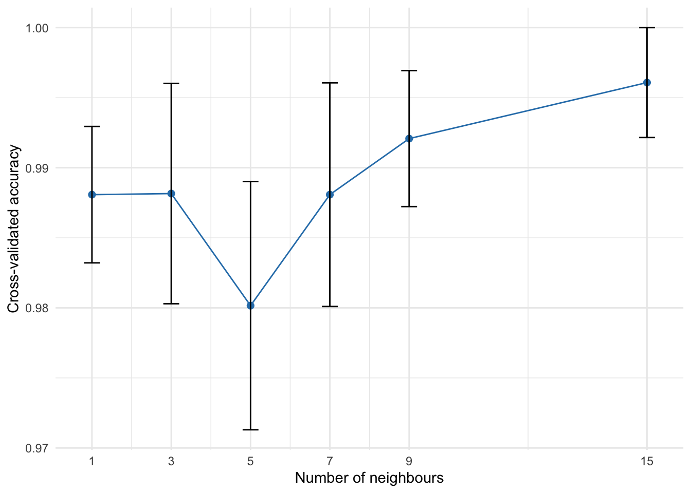

Nearest-neighbor learning workflows
1 Overview
Nearest-neighbour prediction is defined by a dissimilarity: a new observation is compared with the training observations, and its prediction is formed from the closest cases. For mixed-type predictors, the distance definition is therefore part of the model.
manydist integrates this idea with tidymodels through:
-
step_mdist(output = "distance_to_training"), which replaces the original predictors with distances to the training observations; -
nearest_neighbor_dist(), a parsnip model specification that consumes those distance columns.
This guide builds, tunes, and evaluates a mixed-data nearest-neighbour classifier while keeping all preprocessing inside the resampling workflow.
2 Setup
We predict penguin species from four numerical and two categorical variables.
penguins_small <- palmerpenguins::penguins |>
dplyr::select(
species,
bill_length_mm,
bill_depth_mm,
flipper_length_mm,
body_mass_g,
island,
sex
) |>
tidyr::drop_na()
dplyr::glimpse(penguins_small)Rows: 333
Columns: 7
$ species <fct> Adelie, Adelie, Adelie, Adelie, Adelie, Adelie, Adel…
$ bill_length_mm <dbl> 39.1, 39.5, 40.3, 36.7, 39.3, 38.9, 39.2, 41.1, 38.6…
$ bill_depth_mm <dbl> 18.7, 17.4, 18.0, 19.3, 20.6, 17.8, 19.6, 17.6, 21.2…
$ flipper_length_mm <int> 181, 186, 195, 193, 190, 181, 195, 182, 191, 198, 18…
$ body_mass_g <int> 3750, 3800, 3250, 3450, 3650, 3625, 4675, 3200, 3800…
$ island <fct> Torgersen, Torgersen, Torgersen, Torgersen, Torgerse…
$ sex <fct> male, female, female, female, male, female, male, fe…3 Creating a final test set
The test set is held aside before any tuning. Stratification preserves the species proportions in both partitions.
set.seed(2026)
penguin_split <- rsample::initial_split(
penguins_small,
prop = 0.75,
strata = species
)
penguin_train <- rsample::training(penguin_split)
penguin_test <- rsample::testing(penguin_split)
dplyr::bind_rows(
penguin_train |>
dplyr::count(species) |>
dplyr::mutate(partition = "training"),
penguin_test |>
dplyr::count(species) |>
dplyr::mutate(partition = "test")
) |>
dplyr::select(partition, species, n)# A tibble: 6 × 3
partition species n
<chr> <fct> <int>
1 training Adelie 109
2 training Chinstrap 51
3 training Gentoo 89
4 test Adelie 37
5 test Chinstrap 17
6 test Gentoo 30The test observations are used only after the workflow and the number of neighbours have been selected.
4 A distance-to-training recipe
The recipe outcome is species. Selecting all_predictors() keeps it out of the predictor set. Because Gower distance is not response-aware, species is not used in the distance calculation below.
For response-aware specifications such as u_dep and u_mix, however, step_mdist() automatically discovers the single recipe outcome and uses the outcomes from the current analysis set when the step is prepared. The fitted profiles are reused for assessment and test observations; their outcomes are never required or used. Set response_used = FALSE to construct a predictor-only version of a response-aware distance.
gower_recipe <- recipes::recipe(
species ~ .,
data = penguin_train
) |>
step_mdist(
recipes::all_predictors(),
preset = "gower",
output = "distance_to_training"
)
gower_recipeStep: mdist
role: predictor
trained: FALSE
output: distance_to_training
preset: gower
response: <not used>
(arguments handled internally by preset)During prep(), the step fits the distance preprocessor and stores the training predictors. During bake(), it creates columns named dist_1, dist_2, and so on.
prepared_gower_recipe <- recipes::prep(
gower_recipe,
training = penguin_train
)
training_distances <- recipes::bake(
prepared_gower_recipe,
new_data = penguin_train
)
training_distances |>
dplyr::select(species, dplyr::starts_with("dist_")) |>
dplyr::slice_head(n = 5) |>
dplyr::select(1:7)# A tibble: 5 × 7
species dist_1 dist_2 dist_3 dist_4 dist_5 dist_6
<fct> <dbl> <dbl> <dbl> <dbl> <dbl> <dbl>
1 Adelie 0 0.254 0.245 0.0709 0.230 0.0856
2 Adelie 0.254 0 0.0652 0.259 0.0550 0.279
3 Adelie 0.245 0.0652 0 0.228 0.108 0.239
4 Adelie 0.0709 0.259 0.228 0 0.283 0.0266
5 Adelie 0.230 0.0550 0.108 0.283 0 0.310 For training data, the distance block is square. For new data, it is rectangular: each row is a new observation and each column is one training observation.
test_distances <- recipes::bake(
prepared_gower_recipe,
new_data = penguin_test
)
c(
test_rows = nrow(test_distances),
training_distance_columns = sum(
startsWith(names(test_distances), "dist_")
)
) test_rows training_distance_columns
84 249 This check is useful for understanding the representation, but a fitted workflow normally performs prep() and bake() automatically.
5 Defining the nearest-neighbour model
nearest_neighbor_dist() uses precomputed distance columns. We mark neighbors for tuning and explicitly select the manydist engine.
knn_spec <- nearest_neighbor_dist(
mode = "classification",
neighbors = tune::tune()
) |>
parsnip::set_engine("manydist")
knn_specnearest neighbor dist Model Specification (classification)
Main Arguments:
neighbors = tune::tune()
Computational engine: manydist The recipe and model specification are combined in a workflow.
knn_workflow <- workflows::workflow() |>
workflows::add_recipe(gower_recipe) |>
workflows::add_model(knn_spec)
knn_workflow══ Workflow ════════════════════════════════════════════════════════════════════
Preprocessor: Recipe
Model: nearest_neighbor_dist()
── Preprocessor ────────────────────────────────────────────────────────────────
1 Recipe Step
• step_mdist()
── Model ───────────────────────────────────────────────────────────────────────
nearest neighbor dist Model Specification (classification)
Main Arguments:
neighbors = tune::tune()
Computational engine: manydist 6 Tuning the number of neighbours
Cross-validation estimates performance using only the training partition. Because the distance transformation lives inside the recipe, every assessment fold is compared only with the corresponding analysis fold. This prevents preprocessing leakage.
set.seed(2026)
knn_results <- tune::tune_grid(
knn_workflow,
resamples = penguin_folds,
grid = neighbor_grid,
metrics = yardstick::metric_set(yardstick::accuracy),
control = tune::control_grid(save_pred = TRUE)
)
knn_metrics <- tune::collect_metrics(knn_results)
knn_metrics# A tibble: 6 × 7
neighbors .metric .estimator mean n std_err .config
<int> <chr> <chr> <dbl> <int> <dbl> <chr>
1 1 accuracy multiclass 0.988 5 0.00487 pre0_mod1_post0
2 3 accuracy multiclass 0.988 5 0.00786 pre0_mod2_post0
3 5 accuracy multiclass 0.980 5 0.00886 pre0_mod3_post0
4 7 accuracy multiclass 0.988 5 0.00798 pre0_mod4_post0
5 9 accuracy multiclass 0.992 5 0.00485 pre0_mod5_post0
6 15 accuracy multiclass 0.996 5 0.00392 pre0_mod6_post0
knn_metrics |>
ggplot2::ggplot(
ggplot2::aes(
x = neighbors,
y = mean
)
) +
ggplot2::geom_line(colour = "#2C7FB8") +
ggplot2::geom_point(size = 2, colour = "#2C7FB8") +
ggplot2::geom_errorbar(
ggplot2::aes(
ymin = mean - std_err,
ymax = mean + std_err
),
width = 0.4
) +
ggplot2::scale_x_continuous(breaks = neighbor_grid$neighbors) +
ggplot2::labs(
x = "Number of neighbours",
y = "Cross-validated accuracy"
) +
ggplot2::theme_minimal()
The best value is selected using the same metric.
best_neighbors <- tune::select_best(
knn_results,
metric = "accuracy"
)
best_neighbors# A tibble: 1 × 2
neighbors .config
<int> <chr>
1 15 pre0_mod6_post07 Final fit and test-set evaluation
The selected value is inserted into the workflow, which is then fitted once to all training observations.
final_knn_workflow <- tune::finalize_workflow(
knn_workflow,
best_neighbors
)
final_knn_fit <- parsnip::fit(
final_knn_workflow,
data = penguin_train
)
final_knn_fit══ Workflow [trained] ══════════════════════════════════════════════════════════
Preprocessor: Recipe
Model: nearest_neighbor_dist()
── Preprocessor ────────────────────────────────────────────────────────────────
1 Recipe Step
• step_mdist()
── Model ───────────────────────────────────────────────────────────────────────
$x
dist_1 dist_2 dist_3 dist_4 dist_5 dist_6
1 0.00000000 0.25416007 0.24488821 0.07093946 0.23037221 0.08556774
2 0.25416007 0.00000000 0.06520990 0.25861744 0.05500001 0.27912175
3 0.24488821 0.06520990 0.00000000 0.22821343 0.10808870 0.23934693
4 0.07093946 0.25861744 0.22821343 0.00000000 0.28331443 0.02656492
5 0.23037221 0.05500001 0.10808870 0.28331443 0.00000000 0.30987934
6 0.08556774 0.27912175 0.23934693 0.02656492 0.30987934 0.00000000
7 0.23160956 0.03981003 0.02539987 0.22683954 0.09481005 0.23931172
8 0.16196757 0.32127551 0.31031898 0.10028737 0.35950541 0.08309327
9 0.18601223 0.42628342 0.39826992 0.24769243 0.40249555 0.26488653
10 0.39123022 0.26357211 0.20233046 0.39384356 0.28220849 0.39714877
11 0.20597600 0.41208412 0.41457359 0.25267303 0.40647808 0.25597824
12 0.20378172 0.43016402 0.44465387 0.27472118 0.39050314 0.28070377
13 0.38323329 0.26769640 0.21835951 0.40987261 0.27421156 0.41317782
14 0.40222195 0.19654672 0.24963541 0.42486113 0.19178663 0.45142605
15 0.19229530 0.43039112 0.42924700 0.25262087 0.40392588 0.26529690
16 0.40793231 0.24933022 0.29170941 0.46693513 0.20966934 0.49350005
17 0.20732432 0.43767487 0.42677746 0.27826378 0.41388701 0.28156899
18 0.39591331 0.19951661 0.23726616 0.41249189 0.20415587 0.43905680
19 0.19871847 0.41863247 0.41748835 0.24086222 0.39893369 0.25353825
20 0.44723595 0.21608458 0.22615726 0.45437069 0.25521158 0.46550419
21 0.27892812 0.44690102 0.42727954 0.21858661 0.50190104 0.20402208
22 0.37034081 0.24864827 0.26337717 0.42934364 0.21415090 0.45590855
23 0.37611159 0.25527166 0.21599884 0.41398226 0.23148380 0.43117636
24 0.23004616 0.45665360 0.44087954 0.26425341 0.44498695 0.27692943
25 0.39543325 0.23612531 0.24102123 0.45105284 0.20770782 0.46824694
26 0.23336658 0.37470915 0.40552752 0.24708321 0.42301573 0.25369863
27 0.40329536 0.23958627 0.22464092 0.43467253 0.23541120 0.45186663
28 0.20408253 0.40602515 0.40322759 0.24511998 0.37152778 0.27168490
29 0.28651040 0.46400016 0.44698303 0.22483020 0.48404824 0.20763610
30 0.38324691 0.21615126 0.24135061 0.41194670 0.20470106 0.43851162
31 0.41781107 0.22853680 0.21491420 0.42494582 0.24926553 0.44213992
32 0.27341531 0.42666264 0.42176672 0.25538590 0.47095315 0.26200132
33 0.43356159 0.24791888 0.24884654 0.45887815 0.24980441 0.47607225
34 0.21666355 0.38555543 0.39631607 0.22575055 0.40560351 0.24162523
35 0.38222298 0.22645039 0.24361762 0.41360014 0.21103193 0.43614900
36 0.21736941 0.38273795 0.38556209 0.22711778 0.42160069 0.23373320
37 0.43406961 0.28082228 0.28571820 0.49574981 0.23653177 0.51294391
38 0.30152812 0.45477545 0.44987953 0.23984792 0.49906596 0.22662207
39 0.23719640 0.38878429 0.41541795 0.25091303 0.41489298 0.25752845
40 0.46797565 0.23913910 0.24689697 0.47511040 0.27826609 0.48624389
41 0.22540588 0.42107746 0.41199683 0.23537070 0.42294372 0.24804673
42 0.28943248 0.08163969 0.08653561 0.29656722 0.08583403 0.31376132
43 0.11588374 0.26913107 0.26423515 0.10182259 0.31342158 0.10843801
44 0.24431949 0.09671188 0.04340674 0.23954947 0.12140887 0.25674357
45 0.04418562 0.22386335 0.23452837 0.05790224 0.24856033 0.07057827
46 0.11581767 0.26906500 0.28004210 0.12159779 0.31335551 0.12821321
47 0.24416012 0.07803400 0.06441140 0.25592449 0.08685797 0.26848896
48 0.09430637 0.23961720 0.26646731 0.10802300 0.28390771 0.11463842
...
and 10505 more lines.Class predictions and class probabilities can both be requested for the held out observations.
test_predictions <- predict(
final_knn_fit,
new_data = penguin_test
) |>
dplyr::bind_cols(
predict(
final_knn_fit,
new_data = penguin_test,
type = "prob"
)
) |>
dplyr::bind_cols(
penguin_test |>
dplyr::select(species)
)
test_predictions |>
dplyr::slice_head(n = 8)# A tibble: 8 × 5
.pred_class .pred_Adelie .pred_Chinstrap .pred_Gentoo species
<fct> <dbl> <dbl> <dbl> <fct>
1 Adelie 1 0 0 Adelie
2 Adelie 1 0 0 Adelie
3 Adelie 1 0 0 Adelie
4 Adelie 1 0 0 Adelie
5 Adelie 1 0 0 Adelie
6 Adelie 1 0 0 Adelie
7 Adelie 1 0 0 Adelie
8 Adelie 1 0 0 Adelie
yardstick::accuracy(
test_predictions,
truth = species,
estimate = .pred_class
)# A tibble: 1 × 3
.metric .estimator .estimate
<chr> <chr> <dbl>
1 accuracy multiclass 1
yardstick::conf_mat(
test_predictions,
truth = species,
estimate = .pred_class
) Truth
Prediction Adelie Chinstrap Gentoo
Adelie 37 0 0
Chinstrap 0 17 0
Gentoo 0 0 30The test result estimates the performance of the entire selected workflow: Gower preprocessing, the distance-to-training representation, and the tuned nearest-neighbour rule.
8 Using a custom distance specification
Presets are not required. The same workflow can use a custom categorical dissimilarity, numerical preprocessing method, and commensurability choice.
custom_recipe <- recipes::recipe(
species ~ .,
data = penguin_train
) |>
step_mdist(
recipes::all_predictors(),
preset = "custom",
method_cat = "matching",
method_num = "std",
commensurable = TRUE,
output = "distance_to_training"
)
custom_workflow <- workflows::workflow() |>
workflows::add_recipe(custom_recipe) |>
workflows::add_model(knn_spec)
custom_workflow══ Workflow ════════════════════════════════════════════════════════════════════
Preprocessor: Recipe
Model: nearest_neighbor_dist()
── Preprocessor ────────────────────────────────────────────────────────────────
1 Recipe Step
• step_mdist()
── Model ───────────────────────────────────────────────────────────────────────
nearest neighbor dist Model Specification (classification)
Main Arguments:
neighbors = tune::tune()
Computational engine: manydist To compare this workflow fairly with the Gower workflow, tune both on the same resampling folds and with the same metric. The distance specification is a modeling choice, so selecting it after looking at the final test result would give an optimistic assessment. The benchmarking guide shows how to construct auditable tables of candidate distance definitions.
9 Practical guidance
- Split off the final test set before selecting the distance or the number of neighbours.
- Keep
step_mdist()inside the recipe so its preprocessor is re-estimated within each resample. - Response-aware specifications automatically use the analysis-fold outcome; use
response_used = FALSEwhen an outcome-independent distance is wanted. - Use
output = "distance_to_training"for prediction;output = "pairwise"is intended for clustering. - Remember that each fitted analysis set produces a different number of distance columns. The workflow handles this automatically.
- Tune the distance definition and the number of neighbours under the same resampling design when both are uncertain.
- Request class probabilities when the application needs calibrated decisions or probability-based performance metrics, not only hard class labels.